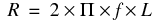

|
|
|||||||||
|
|
|
|
|
|
|
|
|
|
|
This appendix discusses common errors and convergence problems in PSpice.
In order to calculate the bias point, DC sweep and transient analysis for analog devices PSpice must solve a set of nonlinear equations which describe the circuit's behavior. This is accomplished by using an iterative technique--the Newton-Raphson algorithm--which starts by having an initial approximation to the solution and iteratively improves it until successive voltages and currents converge to the same result.
In a few cases PSpice cannot find a solution to the nonlinear circuit equations. This is generally called a "convergence problem" because the symptom is that the Newton-Raphson repeating series cannot converge onto a consistent set of voltages and currents. The following discussion gives some background on the algorithms in PSpice and some guidelines for avoiding convergence problems.
The transient analysis has the additional possibility of being unable to continue because the time step required becomes too small from something in the circuit moving too fast. This is also discussed below.
Note: The AC and noise analyses are linear and do not use an iterative algorithm, so the following discussion does not apply to them. Digital devices are evaluated using boolean algebra; this discussion does not apply to them either.
The Newton-Raphson algorithm is guaranteed to converge to a solution. However, this guarantee has some conditions:
Each of these can be taken in order. Remember that the PSpice algorithms are used in computer hardware that has finite precision and finite dynamic range that produce these limits:

|
The arithmetic used in PSpice is double precision and has 15 digits of accuracy. |
Yes, for any physically realistic circuit. However, it is not difficult to set up a circuit that has no solution within the limits of PSpice numerics.
Consider, for example, a voltage source of one megavolt connected to a resistor of one micro-ohm. This circuit does not have a solution within the dynamic range of currents (+/- 1e10 amps). Here is another example:
V1 1, 0 5v
D1 1, 0 DMOD
.MODEL DMOD(IS=1e-16)
The problem here is that the diode model has no series resistance. To find out more about the diode equations, refer to the Analog Devices chapter in the online PSpice Reference Guide.
It can be shown that the current through a diode is:
I = IS*eV/(N*k*T/q)
N defaults to one and k*T at room temperature is about .025 volts. So, in this example the current through the diode would be:
I = 1e-16*e200 = 7.22e70 amps
This circuit also does not have a solution within the limits of the dynamic range of PSpice. In general, be careful of components without limits built into them. Extra care is needed when using the expressions for controlled sources (such as for behavioral modeling). It is easy to write expressions with very large values.
The device equations built into PSpice are continuous. The functions available for behavioral modeling are also continuous (there are several functions, such as int(x), which cannot be added because of this). So, for physically realistic circuits the equations can also be continuous. Exceptions that come are usually from exceeding the limits of the numerics in PSpice. This example tries to approximate an ideal switch using the diode model:
.MODEL DMOD(IS=1e-16 N=1e-6)
The current through this diode is:
I = 1e-16*eV/(N*.025) = 1e-16*eV/25e-9
Because the denominator in the exponential is so small, the current I is essentially zero for V < 0 and almost infinite for V > 0. Even if there are external components that limit the current, the "knee" of the diode's I-V curve is so sharp that it is almost a discontinuity.
Note: Avoid unrealistic model parameters. Behavioral modeling expressions need extra care.
The device equations built into PSpice include the derivatives, and these are correct. Depending on the device, the physical meaning of the derivatives can be small-signal conductance, transconductance or gain.
Unrealistic model parameters can exceed the limit of 1e14, but it requires some effort. The main thing to look at is the behavioral modeling expressions, especially those having denominators.
Discontinuities in models characteristics and their derivatives cause:
|
|
Conductance calculated in nth iteration cannot become a good guess for next iteration. |
|
|
Sudden switching of operating regions (example diode switching from off to on) and hence false convergence. |
Note: Transient analysis convergence failures are usually due to model discontinuities or unrealistic circuit, source, or parasitic modeling.
Newton-Raphson is guaranteed to converge only if the analysis is started close to the answer. Also, there is no measurement that can tell how close is close enough.
PSpice gets around this by making heavy use of continuity. Each analysis starts from a known solution and uses a variable step size to find the next solution. If the next solution does not converge PSpice reduces the step size, falls back and tries again.
Incorrect initial estimates can cause convergence failure or even false convergence. Consider following scenarios:
|
|
Power electronic circuits may NOT require tight current/voltage tolerances. Setting the value of ABSTOL to 1u will help in the case of circuits that have currents that are larger than several amps. |
|
|
Unless the circuit conducts kilo-Amperes of current, however, setting ABSTOL to a value that is greater than 1u will cause more convergence problems than it will solve. |
|
|
PSpice does not always converge when relaxed tolerances are used. For example, setting the tolerance option, RELTOL, to a value which is greater than .01 can actually cause convergence problems |
|
|
Setting GMIN to a value between 1n and 10n will often solve convergence problems. |
|
|
Setting GMIN to a value, which is greater than 10n, may cause convergence problems. |
If PSpice encounters a convergence problem it inserts into the output file a message that looks like the following.
|
ERROR -- Convergence problem in transient analysis at Time = 7.920E-03 |
|||||||
|
Time step = 47.69E-15, minimum allowable step size = 300.0E-15 |
|||||||
These voltages failed to converge: V(x2.23) = 1230.23 / -68.4137 |
|||||||
These supply currents failed to converge: I(X2.L1) = -36.6259 / 2.25682 |
|||||||
These devices failed to converge: X2.DCR3 X2.DCR4 x2.ktr X2.Q1 X2.Q2 |
|||||||
Last node voltages tried were: |
|||||||
The message always includes the banner (ERROR -- convergence problem ...) and the trailer (Last node voltages tried were ...). It cannot include all three of the middle blocks.
The Last node voltages tried... trailer shows the voltages tried at the last Newton-Raphson iteration. If any of the nodes have unreasonable large values this is a clue that these nodes are related to the problem. "These voltages failed to converge" lists the specific nodes which did not settle onto consistent values. It also shows their values for the last two iterations. "These supply currents failed converge" does the same for currents through voltage sources and inductors. If any of the listed numbers are +/- 1e10 then that is an indication that the value is being clipped from an unreasonable value. Finally, "These devices failed to converge" shows devices whose terminal currents or core fluxes did not settle onto consistent values.
The message gives a clue as to the part of the circuit which is causing the problem. Looking at those devices and/or nodes for the problems discussed above is recommended.
The hardest part of the whole process is getting started, that is, finding the bias point. PSpice first tries with the power supplies set to 100%. A solution is not guaranteed, but most of the time the PSpice algorithm finds one. If not, then the power supplies are cut back to almost zero. They are cut to a level small enough that all nonlinearities are turned off. When the circuit is linear a solution can be found (very near zero, of course). Then, PSpice works its way back up to 100% power supplies using a variable step size.
Once a bias point is found, the transient analysis can be run. It starts from a known solution (the bias point) and steps forward in time. The step size is variable and is reduced as needed to find further solutions.
In case the circuit fails to converge, you should first check the circuit topology and connectivity, followed by modelling of circuit components, and finally check if Pspice options are set properly.
|
|
Make sure that all of the circuit connections are valid. Check for incorrect node numbering or dangling nodes. Also, verify component polarity. |
|
|
Check for syntax mistakes. Make sure that you used the correct PSPICE units (i.e. MEG for 1E6, not M, which means mili in simulations). |
|
|
PSpice checks for the following conditions and provides messages if they occur: |
|
|

|
Make sure that capacitors and/or current sources are not connected in series. |
|
|
|
Make sure that no (groups of) nodes are isolated from ground by current sources and/or capacitors. |
|
|
|
Make sure that there are no loops of only inductors and/or voltage sources. |
|
|
Place the ground (node 0) somewhere in the circuit. Be careful when you use floating grounds (e.g. chassis ground); you may need to connect a large resistor from the floating node to ground. All nodes will be reported as floating if "0 ground" is not used. |
|
|
Make sure that voltage/current generators use realistic values, and verify that the syntax is correct. |
|
|
Make sure that dependent source gains are correct, and that E/G element expressions are reasonable. Verify that division by zero or LOG(0) cannot occur. |
|
|
Make sure that there are no unrealistic model parameters; especially if you have manually entered the model into the netlist. |
|
|
Avoid using digital components, unless really necessary. Initialize the nodes with valid digital value to ensure the state is not ambiguous. |
The first consideration for semiconductors is to avoid physically unrealistic model parameters. As PSpice steps the power supplies up, it has to step carefully through the turn on transition for each device. In the diode example above, for the setting N=1e-6, the knee of the I-V curve would be too sharp for PSpice to maintain its continuity within the power supply step size limit of 1e-6.
Range limits: Voltages and currents in PSpice are limited to the range +/- 1e10. Care must be taken that the output of expressions falls within this range. This is especially important when one is building an electrical analog of a mechanical, hydraulic or other type of system.
Source limits: Another consideration is that the controlled sources must turn off when the supplies are almost 0 (.001%). There is special code in PSpice which "squelches" the controlled sources in a continuous way near 0 supplies. However, care should still be taken using expressions that have denominators. Take, for example, a constant power load:
GLOAD 3, 5 VALUE = {2Watts/V(3,5)}
The first repeating series starts with V(3,5) = 0 and the current through GLOAD would be infinite (actually, the code in PSpice which does the division clips the result to a finite value). The "squelching" code is required to be a smooth and well-behaved function.
Note: The "squelching" code cannot be "strong" enough to suppress dividing by 0.
The result is that GLOAD does not turn off near 0 power supplies. A better way is described in the application note Modeling Constant Power Loads. The "squelching" code is sufficient for turning off all expressions except those having denominators. In general, though, it is good practice to constrain expressions having the LIMIT function to keep results within physically realistic bounds.
Example: A first approximation to an OPAMP that has an open loop gain of 100,000 is:
VOPAMP 3, 5 VALUE = {V(in+,in-)*1e5}
This has the undesirable property that there is no limit on the output.
A better expression is:
VOPAMP 3, 5 VALUE = + {LIMIT(V(in+,in-)*1e5,15v,-15v}
where the output is limited to +/- 15 volts.
A second consideration is to avoid "unguarded" p-n junctions (no series resistance).
A third consideration is to avoid situations, which could have an ideal current source pushing current into a reverse-biased p-n junction without a shunt resistance. p-n junctions in PSpice have (almost) no leakage resistance and would cause the junction's voltage to go beyond 1e10 volts.
PSpice switches have gain in their transition region. If several are cascaded then the cumulative gain can easily exceed the derivative limit of 1e14. This can happen when modeling simple logic gates using totem-pole switches and there are several gates cascaded in series. Usually a cascade of two switches works but three or more can cause trouble.
Example: .OPTIONS ITL1=400
This increases the number of DC iterations that PSpice will perform before it gives up. In all but the most complex circuits, further increases in ITL1 won't typically aid convergence.
Example: .NODESET V(6)=0
Use NODESETs to set node voltages to the nearest reasonable guess at their DC values, particularly at nodes that are isolated by high impedances, and at nodes that are inputs to high gain devices. NODESETs do not "fix" the voltages at these nodes. They hold these voltages at the specified value while the rest of the circuit converges to a reasonably stable point, and then "releases" these voltages for a few more iterations to find the final, complete solution. Removing these voltages from the initial iterations, when voltages and currents are varying widely helps PSpice achieve convergence.
Specifying the circuit analysis option STEPGMIN enables this (either using .OPTION STEPGMIN in the netlist, or by making the appropriate choice from the PSpice/Edit Simulation Profile… menu command, Options tab). When enabled, the GMIN stepping algorithm is applied after the circuit fails to converge with the power supplies at 100 percent, and if GMIN stepping also fails, the supplies are then cut back to almost zero and then stepped up.
GMIN stepping attempts to find a solution by starting the repeating cycle with a large value of GMIN, initially 1.0e10 times the nominal value. If a solution is found at this setting it then reduces GMIN by a factor of 10, and tries again. This continues until either GMIN is back to the nominal value, or until PSpice fails to converge at one of the GMIN values on the way. In the latter case, GMIN is restored to the nominal value and the power supplies are stepped.
As previously discussed, PSpice uses a proprietary algorithm which finds a continuous path from zero power supplies levels to 100%. It starts at almost zero (.001%) power supplies levels and works its way back up to the 100% levels. The minimum step size is 1e-6 (.0001%). The first repeating series of the first step starts at zero for all voltages. So modeling expressions, especially those having denominators that include voltages should be checked carefully.
This is important while editing schematic for marginally convergent circuits. Setting PREORDER reduces dependency on the netlisting order thereby ensuring that the non convergence error does not occur because of the change in the netlisting order.
The DC sweep uses a hybrid approach. It uses the bias point algorithm (varying the power supplies) to get started. For subsequent steps it uses the previous solution as the initial approximation. The sweep step is not variable, however. If a solution cannot be found at a step then the bias point algorithm is used for that step.
The whole process relies heavily on continuity. It also requires that the circuit be linear when the supplies are turned off.
This is same as in DC analysis. See Checking circuit topology and connectivity.
This is same as in DC analysis. Modelling circuit components.
Example: .OPTIONS ITL2=100
This increases the number of DC iterations that PSpice will attempt before it gives up.
Example:
.DC VCC 0 1 .1 becomes .DC VCC 0 1 .01
Discontinuities in the PSpice models can cause convergence problems. The use of larger steps may help to bypass the discontinuities, while the use of smaller steps may help PSpice find the intermediate answers, which will be used to find the point, which doesn't converge. In some cases, smaller steps can improve convergence, because they help PSpice find a "path" from the valid DC solution at one point to the valid solution at the next.
Example:
.DC VCC 0 5 .1
VCC 1 0
becomes
.TRAN .01 1
VCC 1 0 PULSE 0 5 0 1
In many cases, it is preferable to use the transient analysis to ramp the appropriate voltage and/or current sources. The transient analysis tends to be more robust, and is sometimes faster.
The transient analysis starts using a known solution - the bias point. It then uses the most recent solution as the first guess for each new time point. If necessary, the time step is cut back to keep the new time point close enough that the first guess allows the Newton-Raphson repeating series to converge. The time step is also adjusted to keep the integration of charges and fluxes accurate enough.
In theory the same considerations which were noted for the bias point calculation apply to the transient analysis. However, in practice they show up during the bias point calculation first and, hence, are corrected before a transient analysis is run.
The transient analysis can fail to complete if the time step gets too small. This can have two different effects:
|
|
The Newton-Raphson iterations would not converge even for the smallest time step size, or |
|
|
Something in the circuit is moving faster than can be accommodated by the minimum step size. |
The message PSpice puts into the output file specifies which condition occurred.
|
|
Avoid using digital components, unless really necessary. Initialize the nodes with valid digital value to ensure no ambiguous state. These can cause time-step issues (time-step may unnecessary go too small) and hence transient convergence issue. |
|
|
Add Capacitance for all semiconductor junctions (if no specific value is known: CJO=3pF for diodes, CJC & CJE=5pF for BJTs, CGS and CGD=5pF for JFETs and GaAsFETs, CGDO & CGSO=5pF for MOSFETs if no specific value is known). |
|
|
Look for waveforms that transition vertically (up or down) at the point during which the analysis halts. These are the key nodes, which should be examined for problems. |
Example:
VCC 1 0 PULSE 0 1 0 1f 1f
becomes
VCC 1 0 PULSE 0 1 0 1U 1U
An effort should be made to smooth strong non-linearities. The pulse times should be realistic, not ideal. If no rise or fall time values are given, or if 0 is specified, the rise and fall times will be set to the TSTEP value in the .TRAN statement (set in the Output File Options of the Time Domain (Transient) analysis settings in the simulation profile.
If the transient analysis fails at the first time point then usually there is an unreasonably large capacitor or inductor. Usually this is due to a typographical error. Consider the following capacitor:
C 1 3, 0 1Ouf
"1O" (has the letter O) should have been "10." This capacitor has a value of one farad, not 10 microfarads. An easy way to catch these is to use the LIST option (on the .OPTIONS command).
The LIST option can echo back all the devices into the output file that have their values in scientific notation.
That makes it easy to spot any unusual values. This kind of problem does not show up during the bias point calculation because capacitors and inductors do not participate in the bias point.
Similar comments apply to the parasitic capacitance parameters in transistor (and diode) models. These are normally echoed to the output file (the NOMOD option suppresses the echo but the default is to echo). As in the LIST output, the model parameters are echoed in scientific notation making it easy to spot unusual values. A further diagnostic is to ask for the detailed operating bias point (.TRAN/OP) information.
This lists the small-signal parameters for each semiconductor device including the calculated parasitic capacitances.
The idea here is to smooth any strong non-linearties or discontinuities. This may be accomplished via the addition of capacitance to various nodes and verifying that all semiconductor junctions have capacitance. Other tips include:
The UC Berkeley SPICE contains an unfortunate convention for the substrate node of bipolar transistors. The collector-substrate p-n junction has no DC component. If the capacitance model parameters are specified (e.g., CJS) then the junction has (voltage-dependent) capacitance but no DC current. This can lead to a sneaky problem: if the junction is inadvertently forward-biased it can create a very large capacitance. The capacitance goes as a power of the junction voltage. Normal junctions cannot sustain much forward voltage because a large current flows. The collector-substrate junction is an exception because it has no DC current. If this happens it usually shows up at the first time step. It can be spotted turning on the detailed operating point information (.TRAN/OP) and looking at the calculated value of CJS for bipolar transistors. The whole problem can be prevented by using the PSpice model parameter ISS. This parameter "turns on" the DC current for the substrate junction.
It is important that switching times be nonzero. This is assured if devices have parasitic capacitances. The semiconductor model libraries in PSpice have such capacitances. If switches and/or controlled sources are used, then care should be taken to assure that no sections of circuitry can try to switch in zero time. In practice this means that if any positive feedback loops exist (such as a Schmidt trigger built out of switches) then such loops should include capacitances.
Another way of saying all this is that during transient analysis the circuit equations must be continuous over time (just as during the bias point calculation the equations must be continuous with the power supply level).
While the impedance of capacitors gets lower at high frequencies (and small time steps) the impedance of inductors gets higher.
Note: The inductors in PSpice have an infinite bandwidth.
Real inductors have a finite bandwidth due to eddy current losses and/or skin effect. At high frequencies the effective inductance drops.
Another way to say this is that physical inductors have a frequency at which their Q begins to roll off. The inductors in PSpice have no such limit. This can lead to very fast spikes as transistors (and diodes) connected to inductors turn on and off. The fast spikes, in turn, can force PSpice to take unrealistically small time steps.
|
|
It is recommended that all inductors have a parallel resistor (series resistance is good for modeling DC effects but does not limit the inductor's bandwidth). The parallel resistor gives a good model for eddy current loss and limits the bandwidth of the inductor. The size of resistor should be set to be equal to the inductor's impedance at the frequency at which its Q begins to roll off. The value of this resistor can be calculated using the following formula: |

where f is the roll-off frequency.
Adding parallel resistors limits the inductor impedance at high frequencies.
Example:
A common one milli-henry iron core inductor begins to roll off at no less than 100KHz. A good resistor value to use in parallel is then R = 2*p*100e3*.001 = 628 ohms. Below the roll-off frequency the inductor dominates; above it the resistor does. This keeps the width of spikes from becoming unreasonably narrow.
TIME, the simulation time during transient analysis, is a double precision variable which gives it about 15 digits of accuracy. The dynamic range is set to be 15 digits minus the number of digits of accuracy required by RELTOL. For a default value of RELTOL = .001 (.1% or 3 digits) this gives 15-3 = 12 digits. This means that the minimum time step is the overall run time (TSTOP) divided by 1e12. The dynamic range is large but finite.
It is possible to exceed this dynamic range in some circuits. Consider, for example, a timer circuit which charges up a 100uF capacitor to provide a delay of 100 seconds. At a certain threshold a comparator turns on a power MOSFET. The overall simulation time is 100 seconds. For default RELTOL this gives us a minimum time step of 100 picoseconds. If the comparator and other circuitry has portions that switch in a nanosecond then PSpice needs steps of less than 100 picoseconds to calculate the transition accurately.
Example:
.OPTIONS RELTOL=.01
This option is encouraged for most simulations, since the reduction of Reltol can increase the simulation speed by 10 to 50%. Only a minor loss in accuracy usually results. A useful recommendation is to set Reltol to .01 for initial simulations, and then reset it to its default value of .001 when you have the simulation running the way you like it and a more accurate answer is required. Setting Reltol to a value less than .001 is generally not required.
|
|
Reduce the accuracy of ABSTOL/VNTOL if current/voltage levels allow it. |
Example:
.OPTION ABSTOL=1N VNTOL=1M
Abstol and Vntol should be set to about 8 orders of magnitude below the level of the maximum voltage and current. The default values are Abstol=1pA and Vntol=1uV. These values are generally associated with IC designs.
Example:
.OPTIONS ITL4=40
This increases the number of transient iterations that PSpice will attempt at each time point before it gives up. This is particularly effective at solving convergence problems when the simulation needs to cover a long time period, and fast transitions occur within the circuit during that time. Values greater than 100 won't usually bring convergence; unnecessarily large values can cause.
The SKIPBP option for the transient analysis skips the bias point calculation. In this case the transient analysis has no known solution to start from and, therefore, is not assured of converging at the first time point. Because of this, its use is not recommended. Its inclusion in PSpice is to maintain compatibility with UC Berkeley SPICE. SKIPBP has the same meaning as UIC in Berkeley SPICE. UIC is not needed in order to specify initial conditions.
It should be used as a last resort if there is trouble getting the transient analysis to start because the DC operating point can't be calculated. The initial guess for dc could be made from results of such transient analysis; and then transient analysis could be re-run with operating point. You should add any applicable .IC and IC= initial conditions statements to assist in the initial stages of the transient analysis. Be careful when you set initial conditions, for a poor setting may cause convergence difficulties.
While modeling a mechanical system with an RC circuit, where capacitors are in the order of Farad and current impulses is around 10x A, increase CHGTOL and ABSTOL by six order of magnitude. For example, change CHGTOL from 0.01e-012 to0.01e-006. Simulate the circuit and then start tightening the ABSTOL and CHGTOL values until a convergence error is generated. Once a convergence error is generated, you can revert one step to get the solution.
.OPTIONS DIGSTEPBACK
Setting this option might prove useful in cases where your have convergence problems in a circuits with digital components and you are trying to converge using Solver 1.
Though setting DIGSTEPBACK option might work, it is recommended that you should use solver 0 simulation algorithm to obtain a solution.
|
|

|
Solver 1 and Solver 0 are two matrix solving algorithms used by PSpice. By default, Solver 1 that has better convergence property, is used. But at times, for a circuit with convergence problems changing the simulation algorithm to Solver 0 helps. To change the simulation algorithm from Solver 1 to Solver 0, open the circuit in the schematic editor. From the PSpice menu choose Edit Simulation Profile. In the Simulation Settings dialog box, select the Options tab. Select the Advanced Options button. In the Advanced Analog Options dialog box, change the Simulation algorithm from default to 0. |